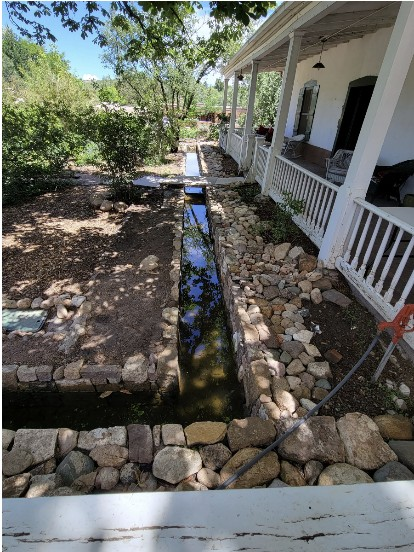
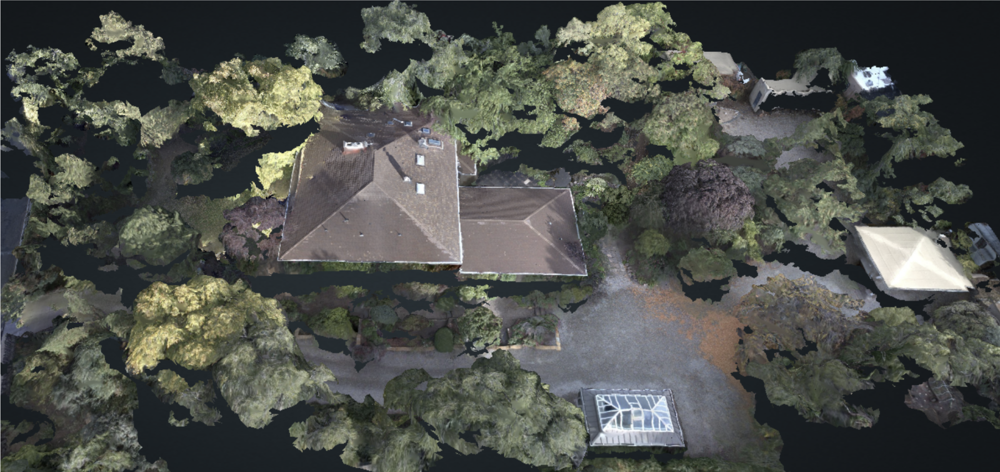

Historic Water Management Systems
Sustainable irrigation from pre-basin well to modern efficient restoration
Original Well System
- Hand-dug well: Pre-1956 basin declaration, legal pre-basin rights
- Production capacity: 15-20 gallons per minute sustained
- Depth: Approximately 180 feet to water table
- Original purpose: Cross Orchard agricultural irrigation
- Current status: Fully operational, excellent water quality
Sluiceway Design
- Gravity-fed system: Efficient water distribution without pumps
- Controllable flow: Gates and channels for targeted irrigation
- Terrace integration: Works with landscape contours
- Seasonal flexibility: Adaptable to changing garden needs
- Water conservation: Minimal waste, maximum efficiency
Charlotte Wilson's Irrigation System Design
Details of the original irrigation system are no longer available. The irrigation system likely included sluiceway channels, terrace distribution, and seasonal flow controls. A similar method was recently restored at El Zaguán, headquarters of the Historic Santa Fe Foundation on Canyon Road. Historic Acequia Restored

Restored sluiceway at El Zaguán on Canyon Road
Official Water Rights Declaration
On November 14, 2025, the New Mexico Office of the State Engineer officially accepted the Declaration of Ownership of Water Rights for 316 East Buena Vista Street, confirming the property's legal rights to the historic well system.
Declaration Summary
Well File Number: SF-00076
Owner: Kingsley Todd Martin
Well Location: 316 East Buena Vista Street, Santa Fe, NM 87501
Basin: Santa Fe Underground Water Basin
Pre-Basin Status: Well drilled prior to January 1, 1956
Declaration Date: October 10, 2025
Accepted Date: November 14, 2025
Permitted Uses:
- Domestic indoor water use
- Outdoor watering of gardens, trees, and landscaping
- Irrigation of up to one acre of non-commercial crops
- Watering of livestock (up to 10 head)
Maximum Annual Diversion: 3.0 acre-feet per year (approximately 977,000 gallons)
Well Specifications: Hand-dug well, approximately 180 feet deep
Official Documentation:
View Official Declaration (PDF)Legal Significance: This declaration formally establishes the property's pre-basin water rights, which are among the most valuable and protected water rights in New Mexico. Pre-basin wells (drilled before 1956) have priority over post-basin wells and are not subject to the same restrictions. The 3.0 acre-feet annual allocation provides substantial capacity for maintaining the historic gardens while supporting modern irrigation needs.
Historical Context: The well was originally drilled to serve the Cross Orchard, one of Santa Fe's significant agricultural operations in the early 1900s. Charlotte Wilson adapted this agricultural infrastructure for her innovative residential garden irrigation system in the 1920s. The declaration ensures that this historic water resource will continue to support the property's gardens for generations to come.
1. The New "Heart" of the System: The Well House
Since you have power and water source in one place, the Well House becomes your mechanical room.
Recommended Plumbing Configuration:
- The Cistern (Buffer Tank): Even with good water rights, it is best practice not to pump directly from the well into the irrigation system. This can burn out the well pump if it cycles too often.
- Setup: The well pump fills a storage tank (cistern) near or inside the well house.
- Size: 1,000–2,500 gallons. This acts as a buffer.
- The Booster Pump:
- Spec: 1.5 HP Centrifugal Multistage Pump (e.g., Grundfos CM series or Goulds).
- Function: Draws water from the cistern and pressurizes the mainline to a constant 50–60 PSI.
- Pressure Tank: A 20–44 gallon pressure tank is crucial. It holds pressurized water so the pump doesn't kick on for every tiny drip or hand-washing moment.
- Smart Controller: Mount a Wi-Fi-enabled controller (like a Hunter Hydrawise or Rachio) inside the well house.
2. Water Budgeting: The "3 Acre-Feet" Reality
Having 3 acre-feet is a significant asset in Santa Fe. Here is a rough breakdown of how that supports your lush design:
Total Available: ~977,000 gallons/year
The "Thirsty" Zones:
- Fescue/Buffalo Grass (~2,000 sq ft): Needs ~20 gallons/sq ft/year in Santa Fe. ≈ 40,000 gallons/year
- Orchard & Veggies: High demand during summer. ≈ 30,000 gallons/year
- Ponds: Evaporation replacement. ≈ 15,000 gallons/year
Total Estimated Use: ~100,000 – 150,000 gallons/year
Verdict: Your design uses only ~10-15% of your total water rights. You have abundant capacity to keep the Fescue lush and the orchard heavy with fruit without worrying about limits.
3. Finalized Zone Plan (Pressurized)
With 50 PSI available, here is the optimal zoning for the updated map:
| Zone | Area | Method | Notes |
|---|---|---|---|
| 1 | Fescue & Buffalo Grass (Front) | Pop-up Rotors | Use Hunter MP Rotators. They pop up 4-6 inches, clear the grass height, and vanish when done. |
| 2 | Rose Terrace | Drip Emitters | Use 1.0 GPH (Gallon Per Hour) emitters. One per bush. |
| 3 | Formal Garden | Spray Bodies | Fixed spray heads for dense geometric plantings, or drip grid. |
| 4 | Ponds & Lilacs | Drip Line + Autofill | Run a dedicated line to a float valve in the upper pond to keep water levels constant automatically. |
| 5 | Vegetable Garden | Drip Tape + Spigot | Install a Hydrant/Spigot here. You will want a hose for washing veggies or watering seedlings. |
| 6 | Flower Garden | Drip Grid | Grid layout of drip line for dense cutting flowers. |
| 7 | Orchard (Panhandle) | Bubblers | Use "Flood Bubblers" on each tree. These flood the tree well quickly, encouraging deep roots. |
| 8 | Berries (Panhandle) | Drip Line | Two parallel lines of drip tubing along the berry row. |
4. Immediate Action Item for Installation
The "Sleeve" Requirement:
Looking at your map, the driveway separates the Well House (Water Source) from the Front Garden (Fescue/Vinca).
- Crucial Step: Before any more paving or hardscaping is done, you must install a 4-inch PVC Sleeve under the driveway.
- Why? You need to run wires and the main water pipe from the Well House to the Front Garden. A sleeve allows you to slide these pipes under the driveway without cutting the asphalt later.
Detailed Garden & Irrigation System Plan
For comprehensive irrigation system design, zone layouts, and implementation details, visit the complete garden and irrigation system documentation:
Complete Garden & Irrigation Plan
Detailed documentation including system diagrams, zone specifications, and installation guidelines
View Complete Plan →Water System Restoration Progress
Modernizing infrastructure while honoring historic principles


Water System Restoration
20%Well system operational assessment complete. Modern irrigation infrastructure designed to work with historic sluiceway principles for maximum efficiency.
Completed Tasks:
- Well pump system inspection and testing
- Hire consultant for declare well ownership: Brittany Gaume 505 681 8099
- File Declaration of Well with State Engineers Office (10-10-2025)
- Declaration Granted (11-14-2025) Well declaration grant
Remaining Tasks:
- Map drip irrigation zones
- Historic sluiceway channel documentation
- Modern drip irrigation system design
- Water rights verification and documentation
- Assess need for new irrigation controller system
- Restore historic sluiceway channels
- Install drip irrigation zones
- Test integrated gravity-flow and modern systems
Maintenance
5%Develop and implement ongoing irrigation system maintenance plan.
Completed Tasks:
- Hire irrigation maintenance services (Isreal Varela 505 629-7689)
Remaining Tasks:
- Spring system startup and testing
- Summer efficiency monitoring
- Fall winterization procedures
- Annual well pump inspection
- Controller programming optimization
- Drip line inspection and repairs